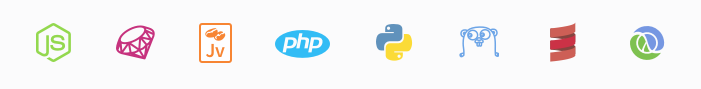

Faça o site do seu evento com Heroku + Conf-boilerplate
Vanessa Me Tonini
Marialab
Caelum
https://vanessametonini.github.io/mytalks/

Vanessa Me Tonini
Marialab
Caelum
https://vanessametonini.github.io/mytalks/
Hoje cada dia está mais popular comunidades organizarem eventos de tecnologia
Fora os tradicionais eventos dentro das universidades e faculdades (semanas acadêmicas)
Ficar dependendo apenas de redes fechadas como Facebook, ou não muito populares como o Lanyrd para divulgar o evento é muito ruim para a autonomia e identidade do evento
Afinal a web não se resume (ou não deveria) em uma rede social privada.
Todos nós sabemos que é importante sim o evento ter seu próprio site, isto dá mais segurança aos participantes, fora a flexibilidade de customização.
Quem aqui já organizou algum evento, está organizando, ou pensa em organizar nos próximos meses?
O propósito desta oficina é passar pra vocês como eu resolvi a necessidade de criar o site de um evento, com baixo orçamento, e utilizando ferramentas e software livre.
Uma dor que nós desenvolvedores sempre passamos quando queremos fazer um projeto e publicá-lo na web é escolher a hospedagem com a infraestrutura ideal
Então surgiu o
PaaS
Platform as Service
Plataforma como Serviço
É um serviço cloud/nuvem, no qual entrega para o cliente um ambiente pronto para receber a aplicação.
Não é necessário entender de infraesturura para utilizar o serviço.
O Heroku surgiu com o propósito de facilitar a vida do desenvolvedor.
♥

Node, Ruby, Java, PHP, Python, Go, Scala, Clojure
Ideal for experimenting with cloud applications in a limited sandbox.
SLEEPS AFTER 30 MINS OF INACTIVITY
USES AN ACCOUNT-BASED POOL OF FREE DYNO HOURS
CUSTOM DOMAINS
512 MB RAM │ 1 web/1 worker
RedHat OpenShift, AWS Elastic Beanstalk, Jelastic, CloudBees, e outros...
o projeto foi criado em 2012 pela BrazilJS Foundation, com o propósito ajudar aqueles que querem organizar conferências/eventos e não tem muito tempo/recursos para investir
naquela época estava rolando um boom de eventos, principalmente os famosos "FrontIns"
é open source e está o Github
https://github.com/braziljs/conf-boilerplate
Documentação em português https://github.com/braziljs/conf-boilerplate/blob/master/README-pt.md
Tecnologias:
Git e Docpad, que é um gerador de estático feito em Nodejs
♥
npm install para instalar as dependênciasnpm run watch para executar local e assistir mudançasnpm run deploy
https://myuser.github.io/myrepo/
Criar arquivo com o nome Procfile (sem extensão)
conteúdo do arquivo:
web: docpad run
Se o repositório não estiver no Github, porém estiver num repositório Git (Bitbucket/Gitlab/VSTS) você pode fazer via Heroku Toolbelt
No Heroku Toolbelt você se autentica em sua conta via terminal e consegue realizar diversas configurações em seus apps
Após isto, basta adicionar em seu repositório Git uma nova remote
Para fazer isto basta:
git remote add heroku https://git.heroku.com/myapp.git
git push heroku